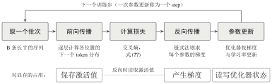
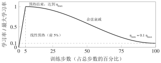
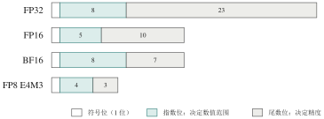

3.4 预训练算法：一个训练步里发生了什么
有了数据和目标，模型怎样一步步变好？本节先回顾预训练所用的 Transformer 结构并估算它有多少参数，再拆开一个训练步：前向、损失、反向、更新；然后讨论更新时用的优化器（SGD、Adam、AdamW）、学习率调度和梯度裁剪，最后讲为什么要用混合精度。结论是：大模型的核心算法并不复杂，AdamW 加“预热 + 余弦衰减”加 BF16 混合精度是当前的标准配置；它们决定了下一节要估算的显存：每个参数要存权重、梯度和两个优化器状态。
3.4.1 模型结构回顾与参数量估算
按使用 Transformer 的方式，模型分为三类（详见第 2.5 节）：仅编码器（如 BERT），适合理解类任务；编码器—解码器（如 T5），适合翻译、摘要等序列到序列任务；仅解码器（如 GPT、LLaMA、Qwen），适合生成任务，是当前大语言模型的主流。一个解码器层由以下组件构成：
多头自注意力：每个位置从多个“视角”同时关注上下文，捕捉多样的依赖关系；
前馈网络：对每个位置独立做非线性变换，常用的激活函数有 ReLU、GELU、SwiGLU；
位置编码：告诉模型每个 token 的位置，当前主流是旋转位置编码（RoPE）；
层归一化：用该层激活值的均值和方差（或均方根）做归一化以稳定训练，主流采用前置归一化（Pre-Norm）和更简洁的 RMSNorm；
残差连接：把子层的输入直接加到输出上，使深层网络易于训练。
参数主要集中在矩阵里，可以直接数出来。设隐藏维度为 \(d\)：注意力的 \(W_Q\)、\(W_K\)、\(W_V\) 和输出投影 \(W_O\) 各有 \(d^2\) 个参数，共 \(4d^2\)；前馈网络两个矩阵（中间维度 \(d_{\mathrm{ff}}=4d\)）共 \(8d^2\)；每层约 \(12d^2\)。再设层数为 \(L\)、词表大小为 \(\lvert\mathcal{V}\rvert\)，则 \[N\approx 12\,L\,d^{2}+2\,\lvert\mathcal{V}\rvert\,d, \tag{3-9}\] \(2\lvert\mathcal{V}\rvert d\) 是输入嵌入层与输出层的参数（二者共享权重时为 \(\lvert\mathcal{V}\rvert d\)）。归一化层和偏置的参数相对很少，忽略不计。
例 3-2 LLaMA-7B 有多少参数
LLaMA-7B 的结构为 \(L=32\)，\(d=4096\)，\(\lvert\mathcal{V}\rvert=32\,000\)，嵌入层与输出层不共享权重。用式 （3-9） 估算参数量。
1 & 每层参数 & \(12\times4096^{2}\) & \(2.01\times10^{8}\) & 式 （3-9） 第一项，\(d\) 来自模型配置
2 & 全部层 & \((2.01\times10^{8})\times32\) & \(6.44\times10^{9}\) & \(L=32\)
3 & 嵌入层 + 输出层 & \(2\times32\,000\times4096\) & \(0.26\times10^{9}\) & 词表 \(32\,000\)，不共享权重取系数 2
4 & 合计 & \(6.44\times10^{9}+0.26\times10^{9}\) & \(6.7\times10^{9}\) & 与官方公布的 6.7B 一致
数据流向模型配置（\(L\)、\(d\)、\(\lvert\mathcal{V}\rvert\)）→ 每层参数 → 乘层数 → 加嵌入与输出层 → 总参数量。 LLaMA 的前馈网络使用 SwiGLU，有三个矩阵，但中间维度取约 \(\tfrac{8}{3}d\)（实际为 \(11\,008\)），参数量与标准的 \(8d^2\) 基本相同，所以公式仍然适用。
3.4.2 训练的基本循环
无论模型多大，预训练都在重复图 3-5 所示的循环。

图 3-5 神经网络训练的基本循环。下排标出了各步在显存中留下的数据：激活值、梯度和优化器状态，它们与权重一起构成训练显存（第 3.5 节）
取一个批次：从训练集中取出 \(B\) 条长度为 \(T\) 的 token 序列；
前向传播：把 token 输入模型逐层计算，得到每个位置下一个 token 的概率分布；
计算损失：按式 （3-2） 计算交叉熵；
反向传播：用链式法则从输出层向输入层逐层算出损失对每个参数的梯度 \(\nabla_\theta\mathcal{L}\)（梯度指向损失上升最快的方向，参数应沿反方向调整；自动微分的实现见第 4.3.2 小节）；
参数更新：优化器根据梯度更新参数，进入下一个训练步。
完成一次循环、即一次参数更新，称为一个训练步（step）。每步使用的样本数称为批大小（batch size），大模型常以 token 计，例如 LLaMA 每步约 400 万个 token。把整个训练集完整过一遍称为一个轮次（epoch）；与传统深度学习动辄几十轮不同，大模型预训练通常只把大部分数据过一遍左右，高质量数据重复两三遍。学习率（learning rate）\(\eta\) 控制每步更新的幅度，是最重要的超参数之一。
3.4.3 优化器、学习率调度与梯度裁剪
随机梯度下降 设第 \(t\) 步的梯度为 \(\boldsymbol{g}_t=\nabla_\theta\mathcal{L}(\theta_t)\)，随机梯度下降（Stochastic Gradient Descent，SGD）直接沿负梯度方向走一步： \[\theta_{t+1}=\theta_t-\eta\,\boldsymbol{g}_t. \tag{3-10}\] 它不保存任何额外状态，但更新方向受单个批次的噪声影响大。带动量的 SGD 维护梯度的指数移动平均 \(\boldsymbol{m}_t=\mu\,\boldsymbol{m}_{t-1}+\boldsymbol{g}_t\)，用 \(\boldsymbol{m}_t\) 代替 \(\boldsymbol{g}_t\) 更新，方向更平滑，代价是每个参数多存一个状态值。
Adam 与 AdamW Adam 同时维护梯度的一阶矩（均值）\(\boldsymbol{m}_t\) 和二阶矩（未中心化的方差）\(\boldsymbol{v}_t\)，为每个参数自适应地调整步长： \[\begin{gathered} \boldsymbol{m}_t=\beta_1\boldsymbol{m}_{t-1}+(1-\beta_1)\boldsymbol{g}_t,\qquad \boldsymbol{v}_t=\beta_2\boldsymbol{v}_{t-1}+(1-\beta_2)\boldsymbol{g}_t^{2},\\ \hat{\boldsymbol{m}}_t=\frac{\boldsymbol{m}_t}{1-\beta_1^{t}},\qquad \hat{\boldsymbol{v}}_t=\frac{\boldsymbol{v}_t}{1-\beta_2^{t}}. \end{gathered} \tag{3-11～3-12}\] 式 （3-12） 是偏差修正：\(\boldsymbol{m}\)、\(\boldsymbol{v}\) 初始化为 0，训练初期会偏小，除以 \(1-\beta^{t}\) 把它们拉回正常量级。AdamW[16] 把权重衰减（一种防止参数过大的正则化）从梯度中解耦，直接作用于参数： \[\theta_{t+1}=\theta_t-\eta\Bigl(\frac{\hat{\boldsymbol{m}}_t}{\sqrt{\hat{\boldsymbol{v}}_t}+\epsilon}+\lambda\,\theta_t\Bigr), \tag{3-13}\] \(\lambda\) 为权重衰减系数，\(\epsilon\) 是防止除零的小常数。AdamW 收敛快、对超参数相对不敏感（学习率仍需仔细调），是目前大模型训练事实上的标准，例如 LLaMA 取 \(\beta_1=0.9\)、\(\beta_2=0.95\)、\(\lambda=0.1\)。要特别记住：AdamW 为每个参数额外保存 \(\boldsymbol{m}\) 和 \(\boldsymbol{v}\) 两个状态，这是训练显存的主要来源之一（第 3.5 节）。
学习率调度 大模型很少使用固定学习率，最常见的是“线性预热 + 余弦衰减”（图 3-6）：前 \(S_w\) 步内学习率从 0 线性增长到 \(\eta_{\max}\)，避免随机初始化的模型被过大的更新“冲垮”；此后按余弦曲线降到 \(\eta_{\min}\)，让模型在后期精细收敛。记总步数为 \(S\)，第 \(s\) 步的学习率为 \[\eta_s=\begin{cases} \eta_{\max}\cdot\dfrac{s}{S_w}, & s<S_w,\\[8pt] \eta_{\min}+\dfrac12(\eta_{\max}-\eta_{\min})\Bigl[1+\cos\Bigl(\pi\cdot\dfrac{s-S_w}{S-S_w}\Bigr)\Bigr], & S_w\le s\le S. \end{cases} \tag{3-14}\] LLaMA 预热 2000 步，并把学习率最终衰减到最大值的 10%。

图 3-6 “线性预热 + 余弦衰减”的学习率调度（示意：预热占总步数的 5%，最小学习率为最大值的 10%）
梯度裁剪 训练中偶尔出现梯度突然极大的情况，导致参数被剧烈更新、损失突然飙升（损失尖峰，loss spike）。梯度裁剪在梯度的 \(L_2\) 范数超过阈值 \(c\) 时按比例缩小梯度： \[\boldsymbol{g}\leftarrow\boldsymbol{g}\cdot\min\Bigl(1,\ \frac{c}{\lVert\boldsymbol{g}\rVert_2}\Bigr), \tag{3-15}\] 大模型训练常取 \(c=1.0\)（GPT-3、LLaMA 都是如此）。
3.4.4 混合精度训练
计算机中的浮点数由符号位、指数位和尾数位组成：指数位决定能表示的数值范围，尾数位决定精度（图 3-7、表 3-5）。

图 3-7 四种浮点格式的位构成（方格内数字为位数）。BF16 与 FP32 的指数位相同，因此表示范围相同；FP16 指数位少，范围小，梯度容易下溢
表 3-5 大模型训练常用的浮点格式
| 格式 | 位数 | 每个数 | 最大可表示值 | 特点 |
|---|---|---|---|---|
| FP32 | 32 | 4 字节 | 约 \(3.4\times10^{38}\) | 精度高，计算慢、占用大 |
| FP16 | 16 | 2 字节 | \(65\,504\) | 范围小，梯度容易下溢或上溢，需要损失缩放 |
| BF16 | 16 | 2 字节 | 约 \(3.4\times10^{38}\) | 与 FP32 范围相同、精度较低，训练稳定 |
| FP8（E4M3） | 8 | 1 字节 | 448 | 新一代硬件支持，需要精细的缩放策略 |
全用 FP32 最稳妥，但现代 GPU 的张量核心在 16 位精度下的吞吐通常是 FP32 的数倍乃至十余倍。混合精度训练（mixed precision training）[17]兼顾二者：
保存一份 FP32 的主权重（master weights）；
每步把主权重转为 FP16 或 BF16，用低精度完成前向与反向传播，得到低精度梯度；
把梯度转回 FP32，由优化器更新 FP32 主权重。
计算量最大的矩阵乘法在低精度下进行，速度显著提高；参数更新在 FP32 下进行，避免许多微小的更新量在低精度下被舍入为零。使用 FP16 时，很多梯度会因范围太小而下溢为 0，需要损失缩放（loss scaling）：先把损失乘以较大的系数 \(s\) 再反向传播，使梯度落入 FP16 的表示范围，更新前再除以 \(s\)。BF16 的指数位与 FP32 相同，基本不需要损失缩放，因此成为当前的首选。DeepSeek-V3 等模型进一步在大规模训练中使用了 FP8 混合精度[18]。
辨析
混合精度不会减少模型状态的显存。实现方式有两种：Megatron-LM、DeepSpeed 等框架同时保存 BF16 权重与梯度（2 + 2 字节）和 FP32 主权重；PyTorch 的自动混合精度只保存 FP32 权重与梯度（4 + 4 字节），计算时临时转换为低精度。两种方式加上 AdamW 的 \(\boldsymbol{m}\)、\(\boldsymbol{v}\)，都约为 16 字节/参数（见下一节的表 3-7）。混合精度节省的主要是计算时间和激活值显存。
本节要点
参数量 \(N\approx12Ld^2+2\lvert\mathcal{V}\rvert d\)；LLaMA-7B 约 \(6.7\times10^9\)。
训练步：取批次、前向、损失、反向、更新；AdamW 为每个参数多存 \(\boldsymbol{m}\)、\(\boldsymbol{v}\) 两个状态。
标准配置：AdamW + 线性预热与余弦衰减 + 梯度裁剪 + BF16 混合精度（FP32 主权重）。
案例进度：课程语料上的继续预训练沿用同样的配置，但学习率取得更小，以免遗忘通用能力。